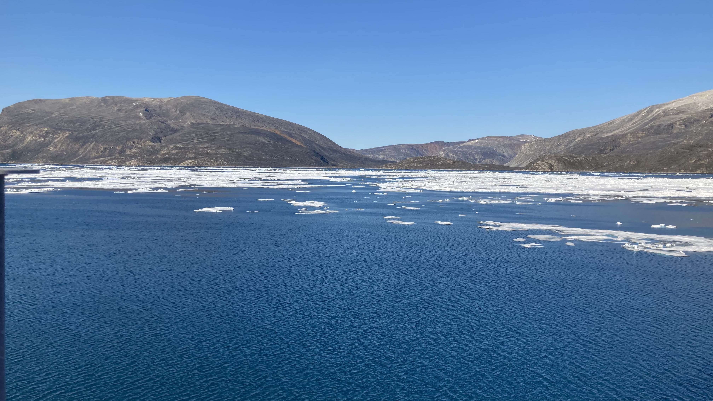

Benthic-Offshore Wind Interactions Evaluation (BOWIE)
The ECOWind BOWIE project addresses the impact of offshore wind expansion on marine ecosystems and biodiversity, aiming to support sustainable decision-making. Using environmental research and stakeholder engagement, it fills knowledge gaps and aids in implementing robust approaches to offshore wind development. Autonomous underwater vehicles survey seabed habitats, while engagement with stakeholders helps understand decision-making uncertainties. BOWIE facilitates alignment between offshore wind expansion and marine spatial planning pressures, promoting biodiversity and environmental recovery.
Learn more

Implications of intraspecific trait variability across different environmental conditions for projections of marine ecosystem future
This project focuses on the impact of species diversity and biological traits on ecosystem responses to environmental changes. It aims to quantify traits affecting species' vulnerability and assess how trait variation influences ecosystem functioning.
Learn more

Geospatial mapping of impacts from offshore wind turbines on benthic community and heritage assets
This project assesses the impact of offshore renewable energy (ORE) expansion on heritage sites and marine ecology to meet UK's net zero goals.
Learn more
Building and enabling UK-Greenland research capacity to address effects of anthropogenic stressors on benthic ecosystems
This project aims to assess the impacts of warming and metal contamination on Arctic ecosystems, particularly in the Greenland region, where understanding remains limited. Through experiments and community engagement, the project will equip researchers to anticipate ecological shifts and contribute to effective decision-making for local systems.
Learn more

Ecological consequences of climatic forcing in the Arctic marine benthos
The combined efforts of this PhD thesis explores the magnitude, direction and context of biological responses to past, present and future climate change – and their concomitant effects on benthic ecosystem functioning in one of the world's most rapidly changing environments.
Learn more

Predicting Anthropogenic Impacts on Ecosystem Functioning using a Response-Effect Trait Framework
A scientific consortium seeking to address the status of the functional trait approach in marine benthic ecology.
Learn more

Communication of Climate Change impacts in the Arctic
An early career researcher consortium seeking to educate young audiences on local, regional and global threats of Arctic climate change via social media posts.
Flora and Fauna
The Ocean
Sea Ice
Glaciers

Building and enabling UK-Russian research capacity to address climate change effects on Arctic marine ecosystems
The Arctic region is undergoing some of the most rapid rates of change in the world in response to climatic forcing, with dramatic transformations underway in the flora and fauna of coastal Arctic habitats that will affect many ecosystem properties and the delivery of ecosystem services.
Learn more

Amundsen 2021 Expedition
Leg 2 of the expedition encompassed the use of the ROV to explore coral seep habitats and involved significant contributions to the esteemed ArcticNet project. The journey spanned from St. John's to Iqaluit, constituting a profound and noteworthy scientific endeavor.
Learn more

BLUEcoast
Experimental simulation of consecutive storms on coastal sediment integrity and biogeochemical cycling.
Learn more

Changing Arctic Ocean Seafloor Cruise JR18006
A multidisciplinary team of like-minded polar benthic scientists collecting physical, chemical and biological samples across a gradient of sea-ice.
Learn more